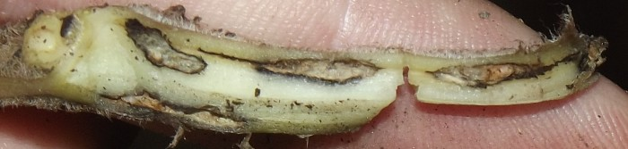
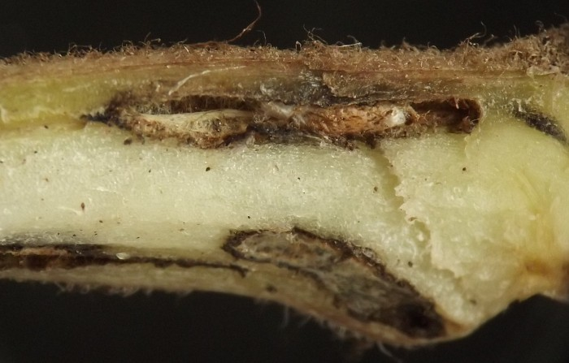
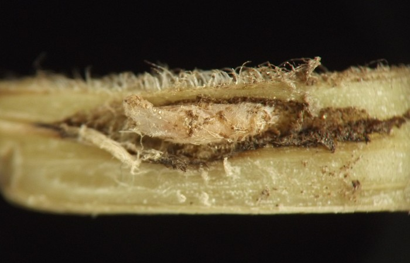
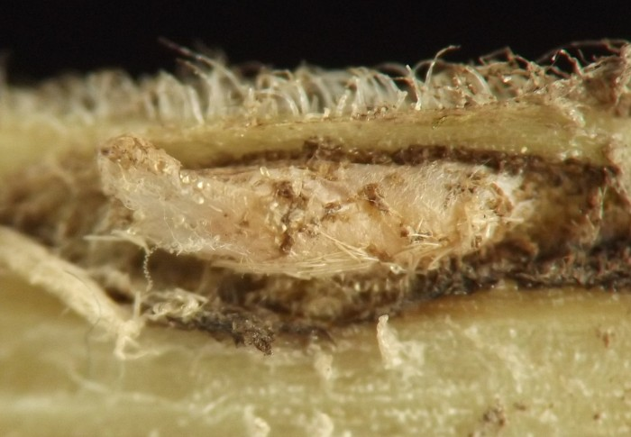
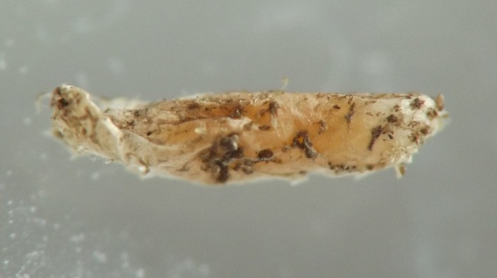
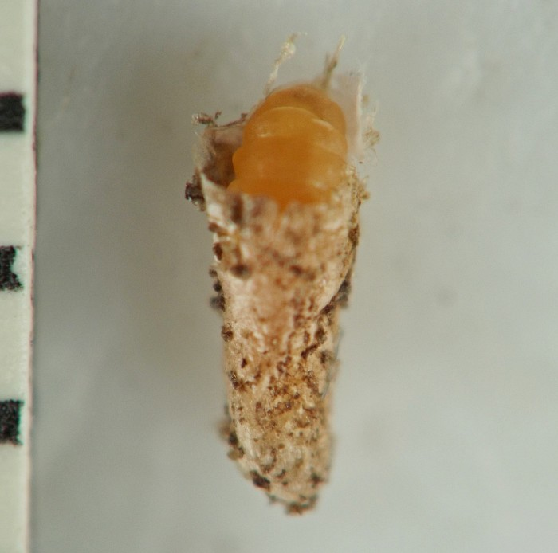

Local feeder etc. (Diptera: Cecidomyiidae) in Asarum
| Record no.: | 0083 |
|---|---|
| Feeding guild: | Local feeder in rhizome |
| Taxonomy: | Diptera: Cecidomyiidae: Neolasioptera sp. |
| Stages observed: | trace, larva |
| Distribution observed: | IA |
| Hosts in Asarum: | A. canadense (wild ginger) |
I discovered several larvae of this cecidomyiid in blackened chambers inside rhizomes of the host. The chambers were rough-walled and appeared to be lined with a whitish symbiotic fungus. Each larva had surrounded itself with a pale cocoon that was sometimes up to half again as long as the larva at rest inside it; the cocoon was thin enough that the larva's outline and orange color could be seen through it. There was no immediately obvious external sign of the larvae's presence. Ray Gagné examined the specimens and determined them to be a species of Neolasioptera, a first for this host (pers. comm., 2021).

 Prev
Prev
{kind=link}
{kind=link}

{kind=link}

{kind=link}

{kind=link}

{kind=link}

Field photo taken 08/23/21 (01); coll. 08/23/21, photos same day (02-06).
Page created: September 8, 2023. Last update: February 1, 2026